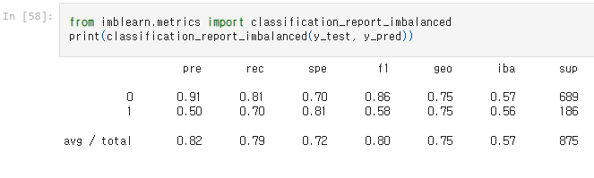

Covid-19 and the burden it places on Hospitals
Our group topic is Hospital Bed Availability, something that we chose because of its importance in the face of the Covid-19 Pandemic, especially in regards to the difficulty of the early weeks of the pandemic where medical supplies were lacking, and there were difficulties in finding beds in hospitals to deal with the surge in patients. It is this projects intention to compile a database that can be utilized by healthcare and county officials to recognize when their healthcare systems begin to become overloaded.
This project focus was chosen as we wished to choose something relevant to our current times and events. We feel strongly that the proper allocation of resources is paramount to getting us all through this pandemic.
Data Exploration
Data Retrtieval
Data was exported from The New York Times (referred to as the 'counties' dataset), CDC ('vaccinations' dataset), and healthdata.gov ('hospitals' dataset). The three datasets were then loaded into S3 buckets as they are too large to upload to github.
Intial Exploration and Database Creation
The initial data cleaning notebook, Deliverable_1_input_data, then uses pandas to read three datasets into individual dataframes. Unnecessary columns are then dropped from all three dataframes, including columns with categorical and some float data types, age range columns, and hospital coverage columns. The 'hospitals' dataset only contains weekly aggregations of its data, while the other two datasets contain daily reporting. The 'counties' and 'vaccinations' datasets are aggregated to report weekly totals on the same collection dates as 'hospitals'. To provide a common primary key among the three dataframes, the fips and date columns are turned into and string datatype and concatenated to fomr the fips_date coulmn. A list of unique fips_date values was generated and then removed from all three dataframes, to return equal length dataframes that can easily be merge in PostgreSQL. The remaining float data types are then converted to integers in all three dataframes. Column names are abbreviated to prevent truncating them in SQL. A connection string is then created using create_engine from sqlalchemy to create the schema and load the data into tables in PostgreSQL. After being loaded, the schema needs to be adjusted to create primary keys (fips_date) for the three tables.
Secondary Data Cleaning
The data is then read back into the next notebook, Postgres to ML Model Connection, using a SQL join for 'counties' and 'hospitals' creating merged_df and using 'vaccinations' to create vaccinations_df. The two dataframes are then merged and redundant columns are dropped to create ml_ready_df, which contains data from all three tables. Percentage and totals columns are then created adding and/or dividing columns by one another. Infinite values are then changed to NaN and all null rows are dropped.
The images below were from our initial analysis of what the data looked like and include barcharts of case data vs time and hospital capacity vs time.


Machine Learning Analysis
Description of preliminary data preprocessing:
Both data sets were loaded into S3 buckets. String data type columns were removed from both data sets. The 'counties' data set was aggregated to show weekly totals instead of daily. All columns that reported an average from the 'hospitals' data set were removed, as the aggregation process would not return accurate results for ratios. Columns that reported 7 day coverage were dropped from the 'hospitals' data set. Age range columns were dropped from the 'hospitals' data set. The fips_date column was created for both tables which combined the collection date and the fips_code into string to give a primary key to each data set. The following word in columns of the 'hospitals' data set were abbreviated to prevent PostgreSQL from truncating the column names: confirmed, suspected, and pediatric. Negative values were converted to zero to eliminate large variances in the aggregated data. Rows in which the fips_date column did not have a match in the other data set were dropped from both data sets. Float data types were converted to integers for both data sets.
Preliminary feature of engineering:
The primary feature of this machine learning model is to classify facilities that are full (ICU bed capacity over 85%) or still spacious (ICU bed capacity lower than 85%). Since the data subset full (minority) is considerably smaller than spacious (majority), we oversample it to get meaningful conclusion. We used random oversample method instead of SMOTE oversampling method because we didn't want it to select data that are classified spacious. The goal is to get 85% accuracy with the classification model.
How data was split into training and testing sets:
I used sample (n=3500) for the first model due to limitation on my personal device. In case of this model, data is splited with the random state of 42 so that it can generate same train and test sets for different models. It is also stratified with y to ensure train and test sets have same proportion of y data.
Model choice:
The dataset we have is manipulated for continous variables. Supervised machine learning models fits to the dataset we have and also incline to have somewhat pair variables. Thus it was difficult to presume which variables can have possible relationship each other outside of their pairs. In order to see the occupancy of ICU beds in facility, I used supervised machine learning model to classify because every dataset has it's fips code with. Through this we aim to determine which counties are full with ICU.
Result:
We got 75% accuracy score that is 10% below our target score, but we agreed it is good enough. We got 91% precision on spacious and 50% precision on full, total of 82% that measure how much reliable a positive classification is. We got high sensitivity score for both majority and minority group and total of 79% that indicate ability to find all the positive samples
